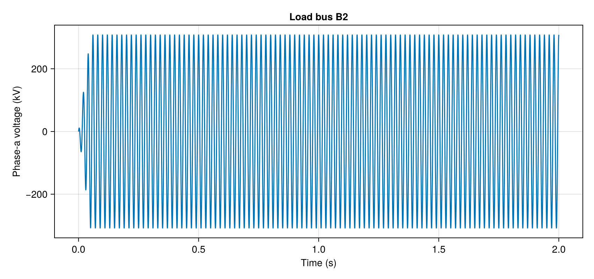
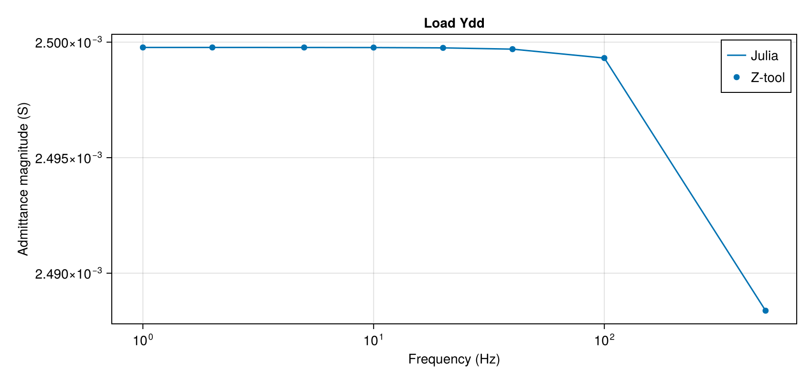

From Julia to PSCAD and Z-tool
Build a three-phase circuit, export it to PSCAD, run it, and measure the load admittance with Z-tool. Julia and PSCAD run on the same Windows computer. Run the sections in order in one Julia session.
1. Install the software
- Install PSCAD 5.1.0, activate its licence, and install GFortran. Open PSCAD's Application Options, select Dependencies, and select the detected GFortran under Fortran Compiler. PSCAD uses the selected compiler to build every case. Close PSCAD after saving the selection. Keep your Windows desktop logged on.
- Install Julia 1.12, which the PSCAD runner uses. Start Julia and run
joinpath(Sys.BINDIR, "julia.exe")to print its executable path. - Create a working folder and save this script there. Open a terminal in that folder, start Julia, and install the Julia packages:
using Pkg
Pkg.activate(".")
Pkg.add(["PowerImpedance", "PythonCall", "CairoMakie"])Loading PythonCall enables PSCAD export. On first use, CondaPkg installs the XML writer mhi-xml 1.3.0 and its XML dependencies for the exporter. CairoMakie draws the plots below.
- Install Python 3.14 for the station runner. The tested version is 3.14.6. In a Windows terminal, run:
python -m pip install mhi-pscad==3.1.2 ztoolacdc==0.1.52
python -c "import sys; print(sys.executable)"Copy the printed Python path and the Julia path into the station file in section 4. This Python installation runs PSCAD automation and Z-tool. CondaPkg manages the exporter's Python environment separately.
Start Julia in your working folder with julia --project=.. Run each section below, or save the station file first and run include("PSCAD_tutorial.jl").
using PowerImpedance
using PythonCall
using CairoMakie2. Build the circuit and solve power flow
The source supplies 380 kV line-to-line RMS at 50 Hz. Its v input uses peak phase-to-ground voltage in kV. The voltage base uses phase RMS kV. The overhead line is 25 km long with three conductors and two ground wires. The load has 400 Ω and 0.0122 H in series per phase.
An ACDQ bus gives d and q coordinates in Julia. PSCAD receives the three physical phases. Geometry uses metres, line resistance uses Ω/km, and the earth tuple gives relative permeability, relative permittivity, and resistivity in Ω m.
voltage_base = 380 / sqrt(3)
elements = (;
source = ac_source(v = voltage_base * sqrt(2), theta = 0.0),
line = overhead_line(;
length = 25e3,
conductors = Conductors(;
organization = :flat,
nᵇ = 3,
nˢᵇ = 1,
Rᵈᶜ = 0.063,
rᶜ = 0.015,
yᵇᶜ = 30,
Δyᵇᶜ = 0,
Δxᵇᶜ = 10,
Δ̃xᵇᶜ = 0,
dˢᵇ = 0,
dˢᵃᵍ = 10),
groundwires = Groundwires(;
nᵍ = 2,
Rᵍᵈᶜ = 0.92,
rᵍ = 0.0062,
Δxᵍ = 6.5,
Δyᵍ = 7.5,
dᵍˢᵃᵍ = 10),
earth_parameters = (1, 1, 100)
),
load = impedance(;
z = s -> 400.0 + s * 0.0122,
conductors = 3
))Each bus connects named component ports and creates d and q nets. Port side1 of the line faces the source. Port side2 faces the load. The load's side2 port connects to ground.
connections = (
NetworkBuilder.Bus(:B1; ports = ((:source, :ac), (:line, :side1)), domain = ACDQ),
NetworkBuilder.Bus(:B2; ports = ((:line, :side2), (:load, :side1)), domain = ACDQ),
NetworkBuilder.Bus(:gnd; ports = ((:load, :side2),), domain = ACDQ))
state = NetworkBuilder.define(elements, connections;
options = (; voltageBase = voltage_base))
powerflow = compute(PowerFlowProblem(state), ACDCPowerFlow())solve(state) also returns the power-flow result. The result retains solved bus voltages for comparison after the PSCAD run. Both exports below use the NetworkState and reuse this solution. Change the component data and buses here to build your own case.
3. Export and open the PSCAD project
Set the export folder below to an empty folder on your computer. mkpath creates it. Export writes a new project and uses its filename stem as the PSCAD project name. Use a new folder for another export. All simulation times and intervals below use seconds.
export_directory = "C:\\PSCAD\\exports"
mkpath(export_directory)
settings = PowerImpedance.PSCAD.SimulationSettings(;
simulation_time = 2.0,
time_step = 10e-6,
sample_step = 100e-6,
frequency = 50.0,
source_ramp = 0.05)
model = export_pscad(state;
path = joinpath(export_directory, "tutorial.pscx"),
powerflow,
settings)This export writes tutorial.pscx. The returned model keeps the settings, voltage and current probe descriptions, and solved operating point in Julia. Export creates the project locally. Open PSCAD, choose Open, select tutorial.pscx in the export folder, and open its Main schematic. The Main schematic shows the source feeding the load through the overhead line. Select the project and click Run to build and simulate it by hand. Close PSCAD before you continue with the Julia-managed run.
4. Configure PSCAD on this computer
Save the following text as station.toml in your working folder. Replace the executable paths with the paths printed during installation. Create the exchange and scratch folders and keep them separate from exports. Each field is described on its line. TOML strings use doubled backslashes.
transport = "local" # Run on this Windows computer.
host = "localhost" # Required station name.
local_root = "C:\\PSCAD\\exchange" # Exchange folder seen by Julia.
shared_root = "C:\\PSCAD\\exchange" # Same exchange folder seen by PSCAD.
remote_root = "C:\\PSCAD\\scratch" # Temporary station working files.
julia_executable = "C:\\Julia\\bin\\julia.exe" # Julia 1.12 executable.
python_executable = "C:\\Python311\\python.exe" # Python with the pip packages.
pscad_version = "5.1.0" # Installed PSCAD version.
# pscad_port = 32051 # Optional automation port, 1024–65535.
timeout = 1800 # Execution limit in seconds.Leave pscad_port commented for this setup. The runner starts a minimized private PSCAD in your logged-on Windows session and loads the copied project. It runs the project and collects its output. It then closes that PSCAD instance. The minimized PSCAD window appears in the Windows taskbar until the run finishes. With a port configured, it connects to an existing listener or starts PSCAD through an interactive scheduled task. The runner leaves an attached instance open. An instance started for the run closes afterwards.
RemoteConfig reads the file. identify reads the installation and compiler information from a temporary PSCAD instance. It starts and closes that instance without loading a project. The dictionary includes version and fortran_version.
remote = RemoteConfig("station.toml")
station = PowerImpedance.PSCAD.identify(remote)
display(station)The station check returns these values from the tutorial run:
"version" => "5.1.0"
"fortran_version" => "GF81x64"
"python_version" => "3.14.6"
"automation_version" => "3.1.2"
"pscad_path" => "C:\\Program Files (x86)\\PSCAD\\5.1.0\\bin\\win64\\Pscad.exe"5. Run from Julia and inspect the results
compute creates a persistent run-XXXXXX directory under local_root. It stages the project in scratch and copies the results into that run folder.
result = compute(model, PSCADRun(); options = (; remote))
display(result.paths)
display(result.diagnostics)result.time holds sample times in seconds. result.channels maps channel names to sample vectors in their recorded units: kV for voltage and kA for current. Three-phase channel suffixes :1, :2, :3 mean phases a, b, c. result.diagnostics holds elapsed time, reuse status, installation information, settings readback, and build warnings. result.paths.run_directory is the persistent folder. result.paths.outputs holds the collected output files.
Compare the final complete cycles with the solved power flow. The table contains PSCAD values, power-flow values, errors, and settling information.
comparison = compare_operating_point(result, model)
display(comparison)The table looks like this:
Table with 7 columns and 7 rows:
quantity name pscad powerflow error settling ⋯
┌────────────────────────────────────────────────────────────────────────────
1 │ current_rms I_source_ac 0.54601 0.546013 5.19122e-6 7.56398e-14 ⋯
2 │ current_rms I_line_side1 0.54601 0.546013 5.19122e-6 7.56398e-14 ⋯
3 │ current_rms I_line_side2 0.5461 0.546103 6.07425e-6 8.76219e-14 ⋯
4 │ current_rms I_load_side1 0.5461 0.546103 6.07425e-6 8.76219e-14 ⋯
5 │ voltage_rms V_B1 219.393 219.393 6.47735e-16 3.88641e-16 ⋯
6 │ voltage_rms V_B2 218.45 218.451 6.07418e-6 9.15943e-14 ⋯
7 │ voltage_angle V_B2 -1.56225 -1.5623 4.82668e-5 2.19038e-11 ⋯Plot phase-a voltage at the load bus. V_B2:1 is its recorded channel name. The figure is displayed in Julia and saved beside the exported project.
voltage_plot = Figure(size = (850, 400))
voltage_axis = Axis(voltage_plot[1, 1];
xlabel = "Time (s)", ylabel = "Phase-a voltage (kV)",
title = "Load bus B2")
lines!(voltage_axis, result.time, result.channels["V_B2:1"])
display(voltage_plot)
save(joinpath(export_directory, "load_voltage.png"), voltage_plot)
Phase-a voltage from a PSCAD 5.1.0 run of this tutorial.
Reuse a finished run by passing its directory. This reads the saved results after checking the saved files and current PSCAD installation. Keep the returned model and run folder to repeat this call in your session.
reused = compute(model, PSCADRun(); options = (;
remote,
resume_run_directory = result.paths.run_directory))6. Scan the load with Z-tool
Export the same network with one AC probe in series at port side1 of the load. The probe's side A1 faces bus B2. A2 faces the load. Z-tool's side-2 result measures the load. The first export with a probe downloads the Z-tool 0.1.52 library into the Julia depot. The export folder receives Z_tool.pslx, tutorial_scan.pscx, tutorial_scan.pswx, and Scan_options frequency tables. Open the workspace to view the project with its library.
scan_model = export_pscad(state;
path = joinpath(export_directory, "tutorial_scan.pscx"),
powerflow,
settings,
ztool_probes = [
ZToolProbe(:ac, "load_scan";
element = :load,
port = :side1)])Z-tool 0.1.52 requires a multiple of eight frequencies for its input tables. These eight frequencies use separate single-tone injections at 1 % voltage. Startup lasts 2 s. Injection settling and the FFT window each last 1 s. f_base sets the FFT resolution in Hz. The network operates at 50 Hz. The integration and sample intervals also use seconds for scans.
scan = ZToolScan(;
frequencies = [1, 2, 5, 10, 20, 40, 100, 500],
f_base = 1.0,
snapshot_time = 2.0,
start_fft = 1.0,
fft_periods = 1,
perturbation = 0.01,
time_step = 10e-6,
sample_step = 100e-6)
scan_result = compute(scan_model, scan; options = (; remote))PSCAD runs a startup simulation and then repeats the case with voltage injections at each scan frequency.
scan_result.results contains one entry per admittance file. Select side 2 and its d axis using the file's labels. The admittance array is ordered as row, column, frequency and uses siemens. Here Ydd relates d-axis current to d-axis voltage at the load. Compare magnitudes in the two rotating frames.
load_scan = only(filter(entry -> entry.name.sides == [2], scan_result.results))
d_axis = findfirst(==("load_scan-2_d"), load_scan.axes)
measured_ydd = load_scan.admittance[d_axis, d_axis, :]
frequencies = load_scan.frequenciesEvaluate the load's Julia admittance at those same frequencies. Linearization returns a network model whose element responses are available through NetworkBuilder.get_y. The load's first two coordinates are d and q on port side1, so entry [1, 1, :] is its Ydd.
linearized = compute(LinearizationProblem(state), AdmittanceLinearization())
load_y = NetworkBuilder.get_y(
linearized.network_model, :load, 2π * im .* frequencies)
admittance_plot = Figure(size = (850, 400))
admittance_axis = Axis(admittance_plot[1, 1];
xlabel = "Frequency (Hz)",
ylabel = "Admittance magnitude (S)",
xscale = log10,
title = "Load Ydd")
lines!(admittance_axis, frequencies, abs.(load_y[1, 1, :]); label = "Julia")
scatter!(admittance_axis, frequencies, abs.(measured_ydd); label = "Z-tool")
axislegend(admittance_axis)
display(admittance_plot)
save(joinpath(export_directory, "load_admittance.png"), admittance_plot)
Load admittance from a PSCAD 5.1.0 run of this tutorial.
7. Find run messages
When a run fails, open its run directory and read outputs/pscad-console.txt and outputs/build-messages.txt. The exception gives the run location. For a returned result, result.paths lists the console log, build messages, output folder, and run directory. scan_result.paths does the same for scans.
Back to Examples